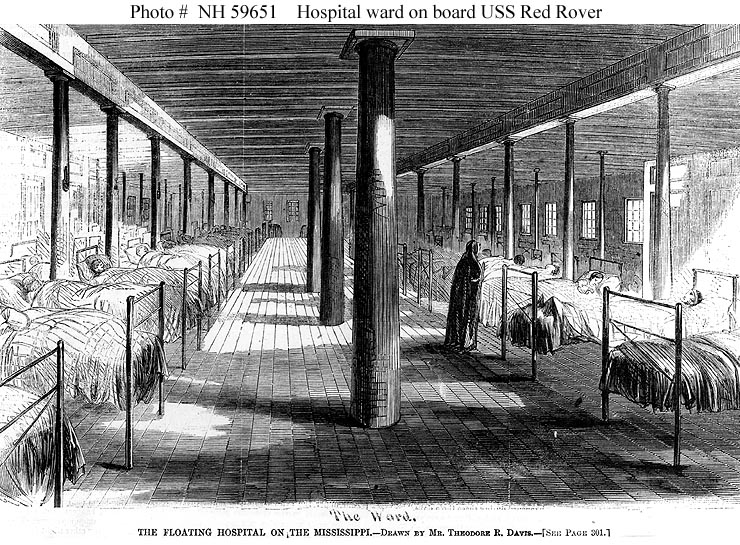
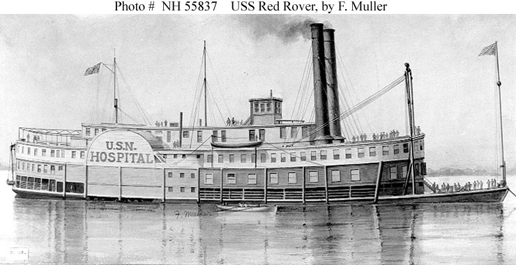

★ At a Glance
Charles's first five months of Civil War service were dominated by hospital settings — first as a patient, then as staff at a different (smallpox-quarantine) hospital. (1) Patient at the Regimental Hospital from 22 December 1862 — only 20 days after his enlistment — illness not specified on the muster card. (2) Detached service at a St. Louis Smallpox Hospital from 20 February through ~early May 1863 (~10–11 weeks) under personal Special Order of Maj. Gen. Samuel R. Curtis. The cards uniformly use the staff-assignment idiom for the Smallpox Hospital phase ("on det. service at" / "attached to") with Curtis as issuing authority — Charles was assigned as hospital staff, not as a smallpox patient at that facility. Whether the original Dec 1862 sickness was itself smallpox (which would make the Smallpox Hospital staff detail a recovered-immune-nurse role) is undetermined by the carded record. Most-likely Smallpox-Hospital location: the city Quarantine Hospital on Quarantine Island (renamed Arsenal Island in 1866), in the Mississippi River opposite the U.S. Arsenal at Second & Arsenal Streets.
What a Civil War Mississippi-theater hospital looked like
No photographs of the St. Louis Quarantine Hospital itself are known to survive — Quarantine Island was washed away by an 1876 flood, taking the Civil War buildings and the markers of 470 federal soldiers buried there with it. The closest surviving period imagery comes from the USS Red Rover, the U.S. Navy's first commissioned hospital ship, which operated on the Mississippi River out of St. Louis in 1862–1865 — staffed in part through the same Western Sanitary Commission and Department of the Missouri channels that staffed the city Smallpox Hospital. The ward and exterior images below are direct period engravings from Harper's Weekly, 1863:


Charles's service here
| Date / period | Status | Source |
|---|---|---|
| 22 December 1862 | ★ Admitted to Regimental Hospital, sick — only 20 days after enlistment. Illness not specified on the muster card. | NARA PG 06 Card B: "Sick in Regt Hospital since Dec 22, 1862"; Pension File Page 8 (War Dept summary corroborates: "Dec 31, 62 Sick in Regt Hospt since Dec 22, 62") |
| ~late Jan 1863 | Recovered (implied — by 28 February the War Dept summary records him "(Present)" before the Smallpox Hospital detail begins). | Pension File Page 8; inferred |
| 20 February 1863 | ★ Detached to Smallpox Hospital by Special Order of Maj. Gen. Curtis. Note the role change: from patient at the Regt Hospital to staff at the Smallpox Hospital. | NARA PG 06 Card A: "On det. service at Small Pox Hospital since Feb. 20, 1863 by order of Maj. Genl. Curtis" |
| Jan–Feb 1863 muster | Marked Absent on the battery muster, with detached-service remark. | Fold3 PG 20 |
| Mar–Apr 1863 muster | ★ Status disputed. NARA PG 07 Card B reads PRESENT; Fold3 PG 18 reads ABSENT. The two clerks' transcriptions disagree — Charles may have rotated back to battery for portions of this period. | NARA PG 07 Card B (PRESENT) vs. Fold3 PG 18 (ABSENT) |
| 18 April 1863 | Special Master Roll specifically records continued attachment to the Smallpox Hospital. | Fold3 PG 19 + NARA PG 07 Card A |
| 9 May 1863 | Curtis relieved as commander of the Department of the Missouri (replaced by Schofield) — the special-order issuing authority changes; the detail almost certainly closes at or before this date. | Wikipedia: Samuel R. Curtis (commander dates Sept 1862 – May 1863) |
| May–Jun 1863 muster | Returned to battery. Recorded "Present" on May–June 1863 muster. | NARA PG 07 Card C; Fold3 PG 17 |
Historical context
The facility — most likely the Quarantine Hospital on Quarantine Island
The 1875 Pictorial St. Louis describes a city institution called the Quarantine Hospital, located on what was then called Quarantine Island (renamed Arsenal Island in 1866) in the Mississippi River about four miles south of downtown, mid-channel directly opposite the U.S. Arsenal at Second & Arsenal Streets. The institution included "a department for the exclusive treatment of small-pox patients" and was operated by the city Board of Health. During the Civil War the same island also housed federal military hospital buildings, providing a single physical site to which the Department of the Missouri's commander could detach a battery soldier by Special Order — covering either the federal military hospital staffing OR the smallpox quarantine cordon. This co-tenancy is the most coherent explanation for why a battery sergeant was being detached to a "Small Pox Hospital" by a departmental commander rather than by a hospital surgeon. The mainland St. Louis City Hospital (Lafayette & 14th) did receive smallpox cases but its standing wartime policy was to transfer such patients out to Quarantine Island. The Sunflower Island ("Smallpox Island") story — sometimes confused with this site — is a different facility 25 miles upstream at Alton, Illinois, operated by the Alton Federal Military Prison and only receiving patients from August 1863 onward (after Charles's detail had ended). For the full source-by-source identification, see the research log.
Smallpox in Civil War St. Louis
Smallpox was an endemic concern in 1860s American cities, dramatically worsened by the wartime concentration of unvaccinated rural recruits in urban camps. St. Louis saw a major smallpox outbreak in winter 1862–1863 — exactly when Charles's detail began. The Department of the Missouri responded by escalating the staffing of the city's existing Quarantine Hospital on Quarantine Island; Charles's detail by personal Special Order of Curtis is part of that escalation. The Quarantine Island institution continued operating in place throughout the war and well into the late 19th century; it was not "moved" to Sunflower Island (which is a separate facility). The federal-military-hospital co-tenancy on Quarantine Island gave the Department of the Missouri direct administrative reach over smallpox-cordon staffing, which is why the order came from Curtis personally rather than from a hospital surgeon.
Maj. Gen. Samuel R. Curtis — the Special Order chain
Samuel R. Curtis (1805–1866) commanded the Department of the Missouri from 24 September 1862 through 9 May 1863 — exactly the window of Charles's detachment. Curtis was an Iowa lawyer and former U.S. Representative who had won the Battle of Pea Ridge in March 1862; by late 1862 he was running the entire trans-Mississippi sub-theater from St. Louis. The Special Order detaching Charles to the Smallpox Hospital in February 1863 came from Curtis personally — an indication of how seriously the Department was taking the urban smallpox outbreak. Curtis was relieved by Lincoln in May 1863 over disagreements about Missouri loyalty politics, succeeded by John M. Schofield. The end of Charles's smallpox-hospital detail is consistent with this command change: when the issuing authority of the Special Order is replaced, the detail closes.
The patient-then-staff sequence — and what the cards do and don't establish
The carded record establishes a clear two-event sequence in winter 1862–63: (1) Charles was admitted to the Regimental Hospital (Battery B's own unit medical facility) on 22 December 1862, only 20 days after his enlistment, with the illness type unspecified; and (2) Charles was detached to the Smallpox Hospital on 20 February 1863 by Curtis's Special Order — at which point the cards switch from the patient idiom ("Sick in Regt Hospital") to the staff idiom ("On det. service at" / "Attached to") with a departmental commander as the issuing authority. So at the Smallpox Hospital itself, Charles was staff, not a smallpox patient at that facility. What the cards don't establish is whether the original Dec 1862 illness was specifically smallpox — if it was, the Smallpox Hospital staff detail two months later may have been a recovered-immune-nurse assignment (the original "patient first, nurse after" reading); if it was a different illness (typhoid, dysentery, pneumonia), the staff detail is administratively coincidental rather than driven by smallpox immunity. See the research log for the full verbatim-card analysis and for the records that would settle the disease-identification question (NARA RG 94 Regimental Hospital ledger for Dec 1862).
What the muster cards say — verbatim
"Sick in Regt Hospital since Dec 22, 1862. Enrolled Dec 2, 1862, St. Louis Mo. for 3 yrs. Mustered in Dec 2, 1862, St. Louis Mo." — NARA PG 06 Card B (Nov–Dec 1862 Battery Muster Roll, the right-side card on PG 06). The "Sick in Regt Hospital since Dec 22, 1862" line was missed in the original transcription; surfaced 6 May 2026 by re-reading the original card. The same notation appears on the parallel Fold3 PG 21.
"[Charles Gannsen] was present except as follows: Dec 31, 62 Sick in Regt Hospt since Dec 22, 62 (Present) Feb 28/63 Det service in small Pox Hosptl. Other records furnish nothing additional bearing upon this." — Pension File F41-523680269E, page 8 (the War Department's 1890s summary reply to the Pension Bureau). Independently corroborates the muster-card sequence — the War Dept clerk explicitly chains the Dec 22 sickness, the recovery, and the Feb 28 Smallpox Hospital detail.
"On det. service at Small Pox Hospital since Feb. 20, 1863 by order of Maj. Genl. Curtis." — NARA PG 06 Card A (Jan–Feb 1863 Battery Muster Roll, the left-side card on PG 06). The "Feb. 20, 1863" start date is preserved on the cleaner NARA scan only; the Fold3 transcription was unable to render the day-of-month.
"On det service at Small Pox Hospital under Maj Genl. Curtis." — Fold3 PG 20 (the same Jan–Feb 1863 muster, transcribed by a different clerk).
"Appears on Special Master Roll for April 18, 1863. Absent. Remarks: Attached to Small Pox Hospital by Special Order of Maj. Genl. Curtis." — Fold3 PG 19 + NARA PG 07 Card A. The April 18 Special Master Roll is the latest carded record of Charles still on Smallpox Hospital duty.
Comprehensive sources
Primary muster-card sources (carded record)
- NARA PG 06 Card A (Jan–Feb 1863 Battery Muster Roll) — "On det. service at Small Pox Hospital since Feb. 20, 1863 by order of Maj. Genl. Curtis." The cleaner NARA mail-order scan; preserves the 20 February 1863 day-of-month that Fold3 could not resolve.
- NARA PG 06 Card B (Nov–Dec 1862 Battery Muster Roll) — "Sick in Regt Hospital since Dec 22, 1862. Enrolled Dec 2, 1862, St. Louis Mo. for 3 yrs. Mustered in Dec 2, 1862, St. Louis Mo." Surfaced May 2026.
- NARA PG 07 Cards A, B, C (Special Master Roll 18 April 1863 + Mar–Apr + May–Jun 1863 musters).
- Fold3 PG 19 (Special Master Roll, 18 April 1863) + Fold3 PG 20 (Jan–Feb 1863 Battery Muster Roll) — duplicate-clerk transcripts of the same musters.
- Fold3 PG 21 (Nov–Dec 1862 muster, Battery B's enlistment-period roll).
- Pension File F41-523680269E, page 8 — the 1890s War Department summary reply to the Pension Bureau, independently chaining the Dec 22 sickness, the recovery, and the Feb 28 Smallpox Hospital detail.
Secondary historical sources — Quarantine Island and the Smallpox Hospital
- Compton & Dry, Pictorial St. Louis: The Great Metropolis of the Mississippi Valley; A Topographical Survey Drawn in Perspective A.D. 1875 — describes the city Quarantine Hospital on Quarantine Island, including "a department for the exclusive treatment of small-pox patients." Available via Wikimedia Commons / Library of Congress digital scans.
- "Early St. Louis Hospitals, Homes, and Asylums" — Lossos compilation — secondary aggregation of period source descriptions of the Quarantine Hospital.
- "1866: The Tale of Quarantine Island" — Lafayette Square Archives — covers the city smallpox hospital and federal military hospital co-tenancy on Quarantine Island; the 1876 flood that destroyed the buildings and the 470 federal-soldier graves.
- "The Civil War in St. Louis" — aboutstlouis.com — confirms the Sunflower Island smallpox quarantine at Alton was a separate facility (post-August 1863), not the same as Charles's detail.
- "In Search of Quarantine Island" — The USCT Chronicle (Walton-Raji) on the island's location, federal soldier burials, and post-war erosion.
- "The Union's Smallpox Island" — War History Online on the Alton/Sunflower Island facility (the wrong facility for Charles, included for clarity on the differentiation).
Secondary historical sources — Mississippi-theater Civil War medical infrastructure
- "The Western Sanitary Commission" — National Museum of Civil War Medicine on federal hospital administration in St. Louis 1862–63.
- Western Sanitary Commission (Wikipedia) — the St. Louis civilian medical-aid organization that worked alongside the federal medical corps, founded September 1861 by Rev. William Greenleaf Eliot.
- USS Red Rover (Wikipedia) — the Navy's first hospital ship, operating on the Mississippi out of St. Louis 1862–1865; the closest visual analogue to Charles's hospital staffing experience.
- Hospital ward on USS Red Rover (Theodore R. Davis, Harper's Weekly 1863) — period engraving showing a Mississippi-theater Union hospital ward.
Command and administrative context
- Maj. Gen. Samuel R. Curtis (Wikipedia) — biographical background for the issuing officer of Charles's detail; commanded the Department of the Missouri 24 Sept 1862 – 9 May 1863.
- Department of the Missouri (Wikipedia) — the administrative jurisdiction whose Special Orders directed Charles's detached duty.
- Battle of Pea Ridge (Wikipedia) — Curtis's signature March 1862 victory; established his standing as Department commander and the credibility of his Special Orders.
- Maj. Gen. John M. Schofield (Wikipedia) — Curtis's successor at Department of the Missouri (May 1863 onward); the command change is the operational reason Charles's detail closed.
Cross-references on this site
- → Smallpox Hospital research log — verbatim card analysis, working timeline, open questions, definitive next steps.
- → Where Charles Served — posting-by-posting timeline
- → St. Louis Garrison Forts · New Madrid · Fort Wyman, Rolla — the other postings in his enlistment
- → NARA mail-order Compiled Service Record packet (G11-422819443E, 13 pp.)
- → Fold3 / NARA M405 Compiled Service Records (25 pp.)
- → Civil War Pension File F41-523680269E (40 pp.)
★ Research log
Two open questions on this detail were investigated in May 2026 — the user's recollection that Charles served as a nurse after a sickness, and the specific identification of the original mainland facility:
- Patient-then-nurse hypothesis: PARTIALLY SUPPORTED. Per user correction (6 May 2026), the Nov–Dec 1862 muster card (NARA PG 06 right card) explicitly records "Sick in Regt Hospital since Dec 22, 1862", and the pension file page 8 War Dept summary chains the events: Dec 31, 1862 sick → "(Present)" → Feb 28, 1863 det. service in Small Pox Hospital. The sequence (sickness, recovery, Smallpox Hospital staff detail) is documented. What's not documented is whether the original Dec 1862 illness was specifically smallpox — if it was, the staff detail is plausibly an immune-nurse assignment; if it was something else, the staff detail is administratively coincidental.
- Facility identification: working answer is Quarantine Hospital / Quarantine Island (renamed Arsenal Island in 1866) in the Mississippi River opposite the U.S. Arsenal. Strong period-source convergence; not yet directly verified by a primary record naming Charles at that address.
- Hospital-sequence timeline: 22 Dec 1862 (Regt Hospital admission) → ~late Jan 1863 (recovered) → 20 Feb 1863 (Smallpox Hospital staff detail begins) → ~9 May 1863 (detail closes with Curtis's relief).
→ Open the full Smallpox Hospital research log — verbatim card analysis, period-source citations, working timeline, open questions, definitive next steps